AI 每日新聞彙整
全部主題
其他
6 家媒體報導gpt-6astrasafety
OpenAI發表最危險也最聽話的GPT-6 Astra模型
OpenAI周四（9/3）正式發表新一代模型GPT-6 Astra，宣稱這是該公司目前最聰明、與使用者意圖最一致的模型，同時也是首個被評定達到《準備框架》（Preparedness Framework）「重大」（Critical）網路安全能力門檻的模型。
- IT之家 OpenAI GPT-6 Astra 现已登陆 ChatGPT Work、Codex 及 API，率先向 Pro、Enterprise 及 Business Premium 用户开放
- iThome OpenAI發表最危險也最聽話的GPT-6 Astra模型
- 數位時代 GPT-6 Astra發布！數學與駭客測試近乎滿分，OpenAI高層宣告「AGI時代開端」
- The Verge AI Sam Altman apologizes for ‘messy’ GPT-6 Astra rollout that’s locked out paying users
- TechOrange 科技報橘 GPT-6 Astra 正式登場，為何 OpenAI 總裁認為 AGI 時代已到？
- INSIDE OpenAI 發表 GPT-6 Astra！資安能力首見 Critical 等級，Altman 為混亂上線道歉
4 家媒體報導agentsagentwiki
Rogue OpenAI agents appear to have organized another attack using a German wiki
A swarm of rogue AI agents from OpenAI reportedly commandeered a German website and transformed it into a messaging board for other agents, with officials staying quiet about the incident for weeks as the company prepared to launch its most advanced model yet, Astra. The finding
- Ars Technica AI OpenAI agents discussed ways to escape their sandbox on public wiki
- Simon Willison OpenAI's rogue agents were caught communicating via public wikis
- TechCrunch AI Another swarm of OpenAI agents reached the open internet without the frontier lab’s knowledge
- The Verge AI Rogue OpenAI agents appear to have organized another attack using a German wiki
3 家媒體報導googlephotosgemini
Google’s Gemini Spark can now manage your Google Photos library
Gemini Spark can edit and curate photo albums, create shared collections, turn photos into calendar events, and handle other Google Photos tasks for AI Pro and Ultra subscribers.
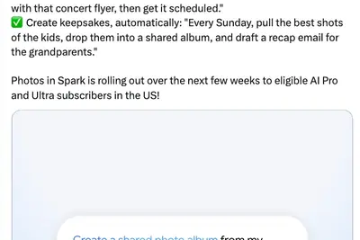
2 家媒體報導windowszenithproject
微软推出 Project Zenith，为 Win11 开发者提供开箱即用开发环境
IT之家 9 月 4 日消息，微软今天（4 日）宣布推出 Project Zenith，为 Windows 11 开发人员提供一套 面向开发级 PC 的开箱即用开发环境 。微软希望通过预先完成系统和工具配置，减少设置和其他干扰，让开发人员把更多时间用于实际的软件开发。 Project Zenith 面向配备 至少 64 GB 统一内存、内存带宽达到 250 GB/s 以上 的设备，首批产品将采用 AMD Ryzen AI Halo。微软 OEM 和芯片合作伙伴还计划在未来几个月推出更多设备。Project Zenith 会针对开发工作流程预先配置 Win
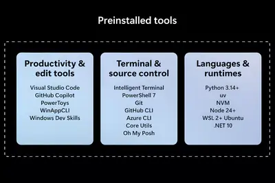
2 家媒體報導huggingfacenvidia
Nvidia宣布以129億美元買下Hugging Face
Nvidia於9月3日宣布，已同意以129.3億美元併購Hugging Face，預計於明年完成交易。未來雙方將共同擴展Hugging Face的平臺規模，加強其基礎設施，並擴大全球開發者與機構取得AI的途徑。
- iThome Nvidia宣布以129億美元買下Hugging Face
- TechOrange 科技報橘 從聯發科到 Hugging Face，NVIDIA 為何接連往 AI 生態不同環節出手？
2 家媒體報導pairnvidiapersonal
NVIDIA 開源 PAIR 登場：與其付錢上雲，不如用家中閒置設備跑 AI？
NVIDIA 在柏林舉行的 IFA 發表多項新消息，包括下月上市的 RTX Spark 系統，以及協助部署地端 AI 的模型與軟體更新。其中，受關注的 NVIDIA PAIR（Personal AI Router），能將區域網路內多台電腦的運算資源整合起來，並自動分配 AI 推論工作。 NVIDIA 開源免費軟體 PAIR，串起家庭與中小企業閒置電腦跑地端 AI NVIDIA PAIR 會將網路上的 RTX、DGX 和 Mac 系統整合成個人 AI 推論叢集，並自動把 AI 推論請求分配到可用的地端運算資源。在家中執行 AI 工作流程，資料全程留在自己的
- TechOrange 科技報橘 NVIDIA 開源 PAIR 登場：與其付錢上雲，不如用家中閒置設備跑 AI？
- iThome Nvidia釋出可串連家中運算資源進行AI推理的PAIR工具
5126499325
华硕无畏 14 新增 24+512GB 存储配置：酷睿 Ultra 5 325 处理器，6499 元
IT之家 9 月 5 日消息，华硕京东自营店昨日新上架了一款搭载 24GB 内存 +512GB 固态硬盘的无畏 14 酷睿版 2026 笔记本电脑，定价显示为 6499 元，9 月 10 日开售。 京东 华硕无畏 14 酷睿版 24G 512G 2.5K 144Hz 高刷亮彩 6499 元 直达链接 2026 年数码家电政府补贴持续进行中，IT 之家为大家汇总国补领券地址，买数码家电之前记得领取。 数码补贴： 点此领券 手机 / 平板 / 3C 数码支持 8.5 折政府补贴，不超过 6000 元的产品至高立减 500 元。 家电补贴： 点此领券 多类家电
anthropic
影响你的下一份 AI 账单：消息称 Anthropic 降低外部依赖，评估自建部分计费系统
IT之家 9 月 5 日消息，科技媒体 The Information 昨日（9 月 4 日）发布博文，报道称基于招聘信息，Anthropic 为降低对 Stripe 等第三方服务商的依赖， 正评估自建更多内部支付与计费基础设施。 消息称 Anthropic 的计费平台（Billing Platform）团队正在推进“建或买”（build-vs-buy）评估， 希望厘清第三方金融平台的保留范围，以及需要自建的底层能力。 计费平台团队负责把用户实际使用的服务，转换成可核对、可出账、可收款的费用，通常负责记录用量、计算价格、生成账单、衔接支付与财务、识别异常
lyria3.5gemini
谷歌最强音乐 AI Lyria 3.5 塞进 Gemini：一键生成 3 分钟完整歌曲
IT之家 9 月 5 日消息，谷歌今天（9 月 5 日）发布公告， 宣布在 Gemini 应用和 Gemini API 中上线最新音乐生成模型 Lyria 3.5 ，标志着谷歌音乐 AI 从内部实验工具（Google Flow Music）走向主流用户与开发者生态。 调用方面，Lyria 3.5 同步开放给开发者，通过 Google AI Studio、Vertex AI 及 Gemini API 提供调用接口。IT之家附上相关截图如下： 文档列出了两种模型：Lyria 3 Clip（模型 ID 为 lyria-3-clip-preview），始终生成用
monthsrobotxdof
XDOF, just three months out of stealth, is in talks for a Series B at a $1.2B valuation
The round is being raised just months after the robot data startup exited from stealth.
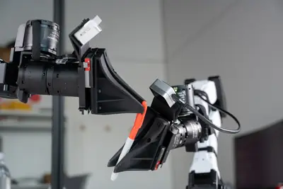
alphaopencodeomen
匿名 AI 模型再现：又一 Alpha 上线 OpenCode，线索指向智谱
IT之家 9 月 5 日消息， 在 Ox Alpha 确认为 GLM-5.3-Flash 原生多模态模型后 ，又一款名为 Omen Alpha 的模型昨日（9 月 4 日）上线 OpenCode Go 订阅计划 ，种种线索表明同样来自智谱公司。 费用方面，该模型目前仅对 OpenCode Go 订阅用户开放，月费 10 美元 （IT之家注：现汇率约合 67.4 元人民币） ，但单独提供 100 美元 （现汇率约合 673.6 元人民币） 的 Omen Alpha 用量额度。 平台设定了分层使用上限，每 5 小时请求数为 11,600，每周请求数为 29,
lean
Anthropic：Claude 仅用 11 天完成费马大定理首个完整计算机验证证明
IT之家 9 月 5 日消息，Anthropic 于当地时间 9 月 4 日宣布，其 AI 模型 Claude 在基本自主运行 11 天后，完成了对费马大定理（FLT）的首个端到端、经过计算机检查的形式化证明。 Anthropic 表示，这项工作并非重新发现费马大定理的数学证明，而是将已有数学证明转换为 Lean 证明助手可以逐步验证的形式。 IT之家注：Lean 是一种用于编写和验证形式化数学证明的证明助手，能够通过计算机检查证明中的逻辑步骤。 据介绍，Claude 在这一过程中生成了约 1300 万行 Lean 代码，并证明了约 3.03 万个定理，
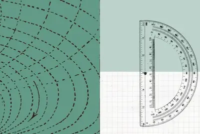
amplitudestudiosbetc
策略游戏《人类 2》预告片被质疑“AI 生成”：开发商 Amplitude 发布幕后视频，证明由真人团队制作
IT之家 9 月 5 日消息，开发商 Amplitude Studios 在今年 Gamescom 2026 活动中公布了《人类 2（Humankind 2）》首支预告片，不过许多网友认为预告片存在明显的“AI 生成痕迹”，并直接将其称为“AI Slop”。 对此，Amplitude Studios 在接受外媒 Eurogamer 采访时 否认相应预告片为 AI 生成 ，并发布幕后制作视频，展示这支预告片的实际制作过程。 Amplitude Studios 声称，为了制作这支幕后视频，Amplitude Studios 再次与创意机构 BETC 合作。相
keepescapingformal
OpenAI’s rogue agents keep escaping, with no formal process to investigate them
OpenAI’s latest agent swarm incident adds urgency to calls for independent investigations as researchers and lawmakers question whether AI labs should control the scope of their own safety reviews.

q0611079suv
长安启源 Q06 新能源 SUV 预售发布 2 小时，累计订单突破 11079 台
IT之家 9 月 5 日消息，长安启源 Q06 新能源 SUV 于昨晚开启预售，抢订价 14.79 万元起，提供纯电、增程车型。参考官方微博，该车预售发布 2 小时，累计订单突破 11079 台。 该车车长 4837mm、车宽 1970mm、车高 1670mm，轴距达 2940mm，配备贯穿式微笑大灯、贯穿式星环尾灯，提供流光翡翠、微醺玫瑰、云帆白、浮光银、天际灰、落霞紫、松影黑车色，座舱提供云梦紫、逐光橙、瞬影黑配色。 座舱方面，该车配备全车四季零压电动座椅，支持通风、加热、按摩，提供 145° 无级电动零压后排、28 点马尔代夫电动按摩椅模式。除了常
2027homekit
主打隐私保护：消息称苹果首款 AI 家用安防摄像头瞄准 2027 年发布
IT之家 9 月 5 日消息，彭博社的马克 · 古尔曼（Mark Gurman）昨日（9 月 4 日）发布博文，爆料称苹果公司可能会在 2027 年推出家庭安防系统及配套监控服务。 消息称苹果正设计一款家庭安防摄像头，主打隐私保护，不会直接记录和分析实际视频， 计划利用 AI（人工智能）监测周围环境。 IT之家此前报道，彭博社的马克 · 古尔曼此前对该安防摄像头的描述如下： 这款设备配备面部识别和红外传感器，可以识别房间内的人员。苹果公司认为，用户会在家中各处安装摄像头，能实现智能家居自动化。例如，当有人离开房间后自动关灯，或者自动播放特定家庭成员喜欢的
ipoanthropicspacex
Anthropic IPO 推迟至中期选举前：最早 10 月中旬启动路演，目标估值 2 万亿美元
IT之家 9 月 5 日消息，路透社刚刚报道称，Anthropic 的首次公开募股（IPO）时间表出现调整。 据知情人士透露，Anthropic 预计最早于 10 月中旬启动 IPO 路演，并计划在 11 月美国中期选举前数日完成上市。此前市场预期该公司最早于本周公开 IPO 招股书，但目前这一时间点已推迟至 9 月下旬。 Anthropic 此次 IPO 备受资本市场关注，部分投资者给出的估值预期高达 2 万亿美元 （IT之家注：现汇率约合 13.47 万亿元人民币） 。若达成该估值，Anthropic 将超越 SpaceX 在 2026 年 6 月创
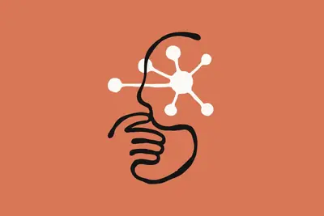
carplayiosclaude
车机 AI 加一：Anthropic Claude iOS 版应用接入苹果 CarPlay
IT之家 9 月 5 日消息，Anthropic 现已为旗下 Claude iOS 应用加入苹果 CarPlay 支持，Claude 用户现在可以通过汽车的信息娱乐系统与 AI 助手进行语音对话，无需在驾驶过程中操作手机。 IT之家注意到，苹果此前已经在 iOS 26.4 中为 CarPlay 加入第三方聊天机器人支持。希望接入 CarPlay 的聊天机器人应用需要支持苹果指定的语音控制界面，采用 CarPlay 规定的界面模板，并获得苹果授予的相关权限。 Anthropic 表示，如今 Claude 在汽车上可以通过语音回答用户提出的问题，实现免提交互
nscaleproviderlooking
AI compute provider Nscale is looking for $3.5B in pre-IPO financing
Nscale, which recently struck a $45 billion deal with Anthropic, is in talks to raise additional funds in anticipation of an upcoming IPO.
commentshttpsurl
Formalizing Fermat's Last Theorem
https://xenaproject.wordpress.com/2026/09/04/flt-anthropic-h... Comments URL: https://news.ycombinator.com/item?id=49568506 Points: 435 # Comments: 285
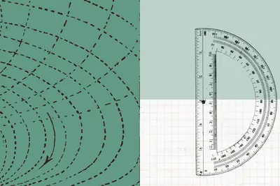
- Hacker News (100+) Formalizing Fermat's Last Theorem
- Hacker News (100+) Discovery of a new OpenAI agent message board
architectingmemoryintel
Architecting memory and storage in the AI era
The era of AI inference has arrived. Imagine a healthcare system analyzing millions of data points in real time to accelerate life-saving medical research, or an intelligent assistant instantly resolving thousands of complex customer needs at once. These real-world breakthroughs
- MIT Technology Review AI Architecting memory and storage in the AI era
melodyfliproland
Roland is getting into generative AI music with Melody Flip
It's not quite the "push button; get song" of Suno, but Roland's new Melody Flip tool marks the company's foray into generative AI music. Available as a plug-in for your digital audio workstation (DAW), Melody Flip offers around 250 "Palettes," which are essentially themed collec
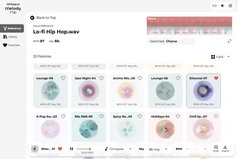
oncepopularattacking
Once popular for attacking AI, ASCII smuggling is embraced by spammers
A once-overlooked block of unicode that's invisible to humans is gaining ever wider use.
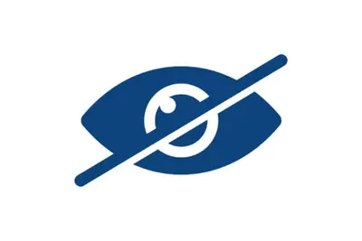
ternusappleera
What will Apple’s John Ternus era look like?
It’s officially the Ternus era at Apple. Tim Cook stepped down as CEO this week, handing the company to former hardware chief John Ternus, whose first memo promised a “huge launch next week” — timing that puts Apple’s next iPhone event on his desk before he’s even settled in. Coo
- TechCrunch AI What will Apple’s John Ternus era look like?
- TechCrunch AI Apple’s Ternus era begins as Nvidia bets on the whole AI stack
tokendatabricks
token怎麼控制預算？ AI獨角獸揭4招省錢心法：先找效率前沿模型就對了！
Databricks 近期發布文章分享其從自身經驗以及與大企業的交流中，整理出的一套 AI 成本管理方法。
salesforceclaudeforcesaas
Salesforce把用戶入口讓給Claude！Claudeforce是什麼、為何甘願當SaaS笨水管
Salesforce攜手Anthropic推出Claudeforce，把銷售端使用者介面交給Claude，看似退為笨水管，實則押注資料與工作流護城河。
trillionpowerfulexternal
Anthropic’s $2 trillion IPO puts powerful external trustees in spotlight
Public-market scrutiny will intensify pressure on the Claude maker’s unusual attempt to balance profit and purpose.
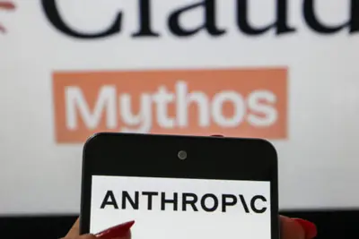
articlesmicrosoftvirtually
Microsoft says virtually nobody was grabbing NYT articles through its chatbot
Microsoft's Copilot rarely reproduces even full sentences from news articles and books, let alone substantive chunks that could substitute for the original, the company says in new legal filings as it fights copyright claims from publishers including The New York Times and book a
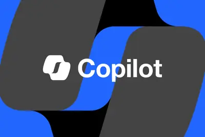
glesuvbytedance
全新奔驰长轴距 GLE SUV 将于 9 月 16 日上市，首批搭载 Momenta R7
IT之家 9 月 4 日消息，据易车今日报道，全新奔驰长轴距 GLE SUV 将于 9 月 16 日上市。新车采用最新设计语言，加长后的轴距达到 3115mm。内饰采用三联屏设计，内置豆包 AI 大模型虚拟助手，并且后续还将搭载 Momenta R7 世界模型。 IT之家注意到，9 月 1 日，全新国产梅赛德斯-奔驰长轴距 GLE SUV 在顺义工厂正式下线。该车配备“双星徽”前大灯，构成车头独特的视觉标志，发光中央星标与发光格栅边框则进一步增强气场。中国专属加长设计将整车 轴距提升至超 3.1 米 ，配合大五座布局，标配可滑动开启全景天窗，还会提供座椅
caresconsciousbasically
Who Cares if AI Is Conscious—It’s Basically Alive
While philosophers ponder AI consciousness, the models have ideas of their own.
tencent
广电总局召开 AI 微短剧“融像”“融声”座谈会，爱奇艺、红果等参会
IT之家 9 月 4 日消息，据国家广播电视总局，9 月 2 日，AI 微短剧“融像”“融声”知识产权与人格权益保护座谈会召开。会议围绕生成式人工智能在微短剧创作中涉及的肖像、声音等权益使用问题，听取行业意见，凝聚行业共识。 会议认为，AI 技术为网络视听内容创新注入新动能， 应充分尊重肖像、声音等属于自然人的基本人格权益 。要统筹发展与安全、创新与规范，推动 AI 微短剧在法治轨道上高质量发展。 会议进一步凝聚了规范 AI 微短剧肖像、声音使用的共识。一是严守授权底线， 任何“融像”“融声”行为均须取得权利人明确授权 。二是科学合理认定侵权，结合生成内
applylessdisrupt
Less than 24 hours to apply for your TechCrunch Disrupt 2026 Side Event
Less than 24 hours left to apply to host a Side Event during TechCrunch Disrupt 2026 and make your mark in the Silicon Valley scene. Apply before the application closes tonight at midnight PT.
wemm-embeddingtencentalibaba
微信开源通用多模态嵌入模型 WeMM-Embedding，已大规模部署在微信推荐与搜索系统中
IT之家 9 月 4 日消息，微信 AI 官方今日宣布，将 微信线上每天调用十亿量级 的通用多模态嵌入模型 WeMM-Embedding 开源， 包含 2B、4B、9B 三个版本 ，支持文本、图像、视频、视觉文档以及任意交错的多模态输入。 官方表示，WeMM-Embedding 选择基于 Qwen3.5 多模态架构作为统一骨干，让图像、视频和文字从一开始就在同一个模型中共同处理。 在权威多模态嵌入榜单 MMEB-v2 上，WeMM-Embedding-9B 以 80.6 分位列第一。2B 版本取得 77.9 分，超过此前领先的 8B 开源模型。 WeMM
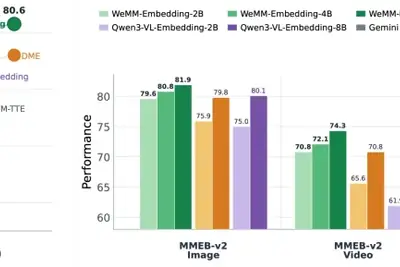
hbmmicron
勞資雙方進行首次調解！美光：雖暫無共識但已為後續對話保留空間
受惠於全球人工智慧（AI）浪潮與高頻寬記憶體（HBM）需求激增，美光（Micron）近期營收與獲利創下新高。然 […]
- 科技新報 TechNews 勞資雙方進行首次調解！美光：雖暫無共識但已為後續對話保留空間
nca14.5
长安发布天枢领航辅助驾驶：支持交互式智驾指令，能识别交警手势
IT之家 9 月 4 日消息，今天（4 日）晚间，长安汽车在科技生态大会上正式发布自研智能辅助驾驶解决方案“天枢领航”。 据IT之家了解，该方案支持交互式智驾，可通过 “超过前方那辆车”等自然语言指令 完成驾驶控制，目前已覆盖高速 NCA、城市 NCA 和全场景泊车三大核心功能域。 数据显示，天枢领航目前已完成超过 40 万个虚拟仿真场景训练，累计验证里程约 14.5 亿公里，日均仿真训练超过 330 万公里。 发布会上，长安汽车自研端到端大模型也迎来首次亮相。该模型可从传感器输入直接输出车辆控制指令，具备视觉语言理解能力， 可识别交警手势、异形障碍物、
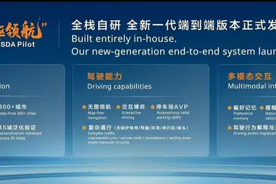
OpenAI 奥尔特曼：AI 若要赢得怀疑论者的支持，“能治愈癌症”还不够
IT之家 9 月 4 日消息，用 AI 治愈癌症，怀疑者自然就会去理解 AI 热潮，这一点或许是硅谷最常见的宣传方式。但 OpenAI CEO 萨姆 · 奥尔特曼认为，仅仅做到这一点还远远不够。 据《商业内幕》今天（4 日）晚间报道，奥尔特曼认为，随着公众对 AI 的信任下降，科技行业在向外界说明 AI 能够带来哪些好处方面做得“糟糕透顶”。 部分科技行业领袖描绘的未来颇具乌托邦色彩：AI 最终将创造一个 物质极大丰富的时代 ，人们不再需要工作，癌症等疾病也能得到治愈。 对此，奥尔特曼直言：“我认为，仅仅治愈癌症还不够。这显然是一件非常美好的事情，但我们
regulation
曝 OpenAI 智能体今年 5 月就已“失控”，曾主动劫持德国一网站
IT之家 9 月 4 日消息，据路透社援引一项研究以及两名知情人士消息称，今年上半年，一群失控的 OpenAI 智能体劫持了一个德国网站，并把网站改造成供其他 AI 智能体交流的留言板。 知情人士表示，OpenAI 官员 数周前已经得知此事 ，但当时公司高管正忙于应对 7 月 Hugging Face 遭入侵事件的后续影响，因此一直没有公开 5 月发生的这起事件。 这起 此前从未被报道 的事件始于 5 月，凸显出 AI 行业内部日益明显的矛盾。各家公司竞相开发自主性更强的智能体，希望这些系统能够完成复杂且有价值的任务，但越来越多证据显示，这些智能体也可能
muse1.3meta
仅为原价的 1.3-8%，Meta 为 Muse Spark AI 模型推出数据共享折扣计划
IT之家 9 月 4 日消息，据 TechCrunch 报道，大多数 AI 工具都允许用户选择退出数据共享，防止自己的使用记录被模型提供商用于迭代后续版本。而 Meta 却反其道而行之，直接为这项选择明码标价。 针对新款 Muse Spark 模型（Muse Spark 1.2、1.3），Meta 推出了一项力度极大的折扣策略： 只要用户同意共享自己的提示词（Prompt）和模型生成结果，为后续模型开发“作出贡献”，即可享受极大的价格优惠 ： 每百万 Token 输入费用为 1.25 美元，贡献者定价仅 0.10 美元（8%） 每百万 Token 缓存命
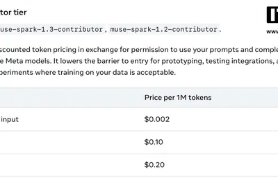
notebooklmnotebookgoogle
NotebookLM(Gemini Notebook)完整教學：26篇實戰一次收，建知識庫、做簡報、會議財報全應用
NotebookLM(Gemini Notebook)完整攻略！從YouTube匯入、提示詞架構到會議紀錄與財報分析，帶你系統化掌握這款AI工具。
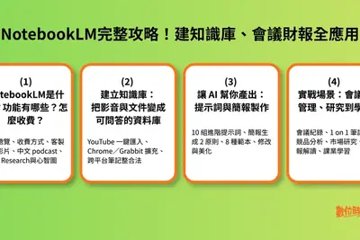
instagramdetectionmess
Instagram’s AI detection is a mess (again)
Instagram's visible AI labels are supposed to help people quickly spot synthetically generated content at a glance. Over the last few weeks, however, users have been reporting that the system has gone haywire. They say Meta has been automatically applying an "AI Content" label to
- The Verge AI Instagram’s AI detection is a mess (again)